Para el análisis estadístico de la población utilizaremos el programa gnumeric que podremos descargar e instalar manualmente de:
si usamos Windows, o desde:
si usamos Mac, o con:
sudo apt-get install gnumeric
en distibuciones basadas en Linux Debian, o con tu gestor de paquetes favorito en cualquier otra distribución basada en UNIX.
En primer lugar abrimos el archivo que hemos descargado con gnumeric eligiendo desde el menú prinicpal del programa Archivo⇒Abrir. Se nos abrirá un díalogo que nos permitirá navegar por nuestros directorios hasta el archivo que hemos descargado desde GenWeb.
No podemos abrir directamente ese archivo ya que no se trata de un archivo de gnumeric. En primer lugar debemos pulsar en el botón rotulado “Avanzado”:
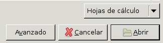
Tras pulsarlo aparecerá un desplegable que, en principio tiene seleccionada la opción “Automáticamente detectado”:
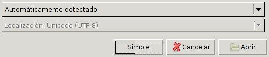
Sin embargo no es esa la opción que nos interesa, pulsamos sobre el desplegable y elegimos la opción “Importar texto (configurable)”:
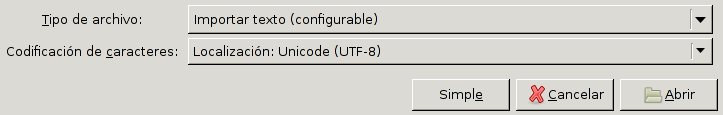
Nos aparecerán una serie de diálogos a través de los cuales indicaremos a gnumeric la forma en que los datos están almacenados en el archivo. El primero de esos diálogos es el siguiente:
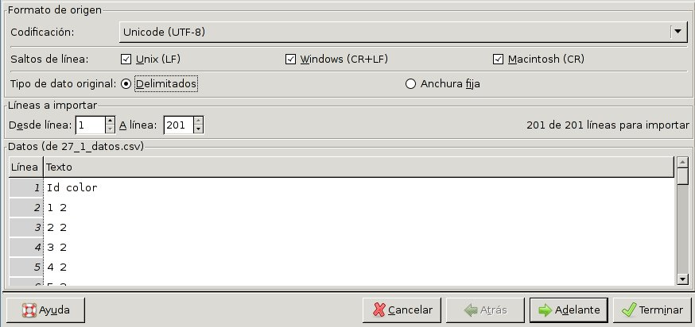
Las opciones por defecto que se observan en la figura son las apropiadas. No obtante comprobaremos que tenemos marcada la opción “Delimitados” como tipo de dato original. Pulsamos entonces sobre el botón rotulado “Adelante” para pasar al siguiente diálogo:
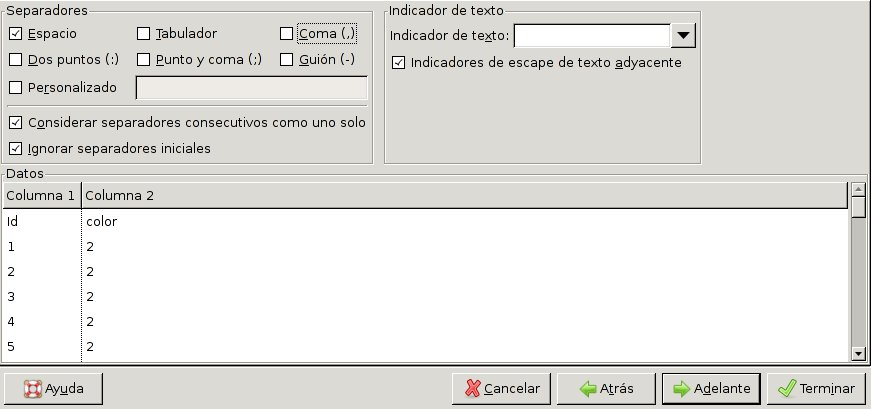
Aqui debemos asegurarnos de marcar la opción “Espacio” como carácter separador, y de que NO está marcada la opción “Coma”. Pulsamos en “Adelante” para pasar al siguiente diálogo:
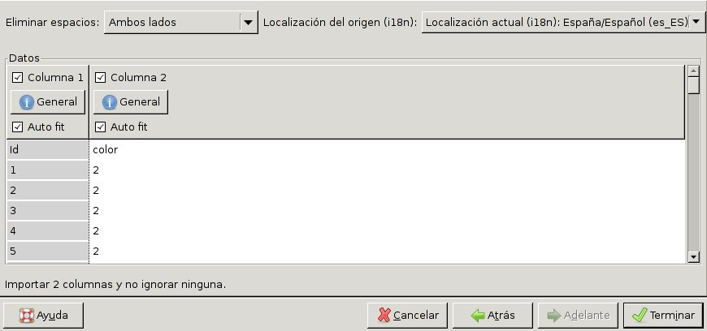
Y, por último, pulsamos en “Terminar”. Tendremos entonces dos columnas de datos en la hoja de cálculo, la primera es la Id de cada individuo y la segunda su valor fenotípico:
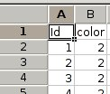
Comenzaremos el análisis estadistico de los datos confeccionando un histograma de frecuencias fenotípicas. Para ello elegimos del menú principal de gnumeric las opciones:
Estadística⇒Estadística descriptiva⇒Tablas de frecuencia⇒Histograma
Aparecerá un díalogo con varias pestañas. En la primera escribiremos como “Rango de entrada”: b2:b201, ya que los fenotipos se encuentran en este rango de casillas si hemos generado una población de 200 individuos.
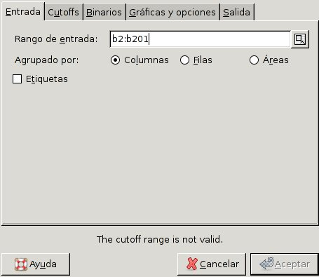
Pasamos entonces a la pestaña “Cutoffs”. Aquí se especifican las clases en las que serán divididos los datos. Aunque vemos que únicamente tenemos 3 clases fenotípicas, en otras ocasiones en las que las clases fenotípicas puedan no estar tan claramente definidas puede ser conveniente dividir los datos en clases pequeñas para poder observar con mayor detalle la distribución de fenotipos. En este caso lo haremos también así ya que es aplicable de una forma más general, y no supone ningún problema a la hora de observar clases fenotípicas claramente definidas como éstas. Puesto que el número mayor es 2, y por defecto, en gnumeric, los rangos están abiertos por su extremo superior, abarcaremos un rango total entre 0–2,1 (ligeramente superior a 2) y lo dividiremos en 21 clases fenotípcas. Para ello especificaremos los datos como se muestra en la figura:
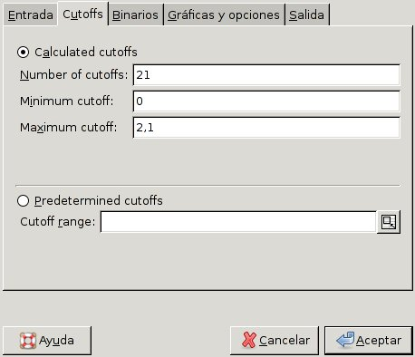
Debemos tener en cuenta que si gnumeric está en español, el carácter decimal es la coma, pero si está en inglés, es el punto.
Pulsaremos entonces en la pestaña “Gráficas y opciones”, y marcaremos la opción “Gráfico de histograma”.
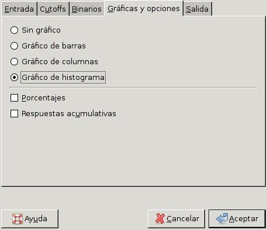
A continuación pulsamos en la pestaña “Salida”, elegimos la opción “Rango de salida” y escribimos “d2” en el campo correspondiente, para que los resultados aparezca en la misma hoja y tengan su esquina superior izquierda en esta casilla.
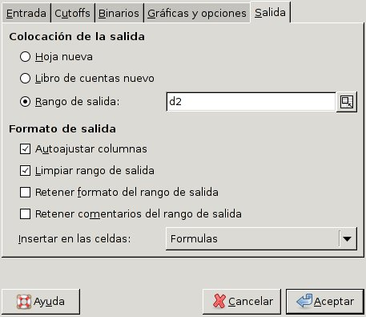
Pulsamos entonces el botón “Aceptar” y aparecerá el histograma de frecuencias, sobre el que podemos pulsar y arrastrarlo hacia la derecha, ya que aparece sobre los datos numéricos con los que se ha hecho el histograma, quedando como se ve a continuación:
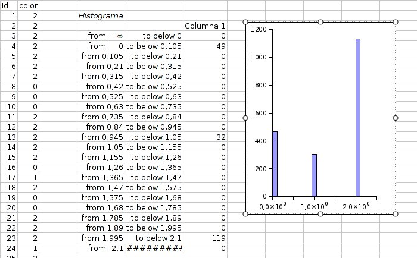
En el ejemplo, vemos que hay 119 individuos con un valor fenotípico de 2, 32 con un valor de 1, y 49 con un valor de 0, que han caído dentro de tres de las clases en las que se ha dividido el rango de valores fenotípicos. Según el diseño del carácter, habíamos asignado el color blanco al valor 0, el rojo al valor 1, y el verde al valor 2. Construiremos una pequeña tabla en la hoja de cálculo que resuma estos resultados. Para ello escribimos los colores correspondientes y, junto a ellos ponemos una fórmula que copie los resultados de las casillas correspondientes de la tabla de frecuencias. En la hoja de cálculo, las casillas cuyo contenido comienzan por el símbolo “=” se consideran fórmulas, por lo que en la casilla a la derecha de “verde” tecleamos = y, a continuación picamos sobre la casilla que tiene el total de individuos con valor fenotípico 2, la casilla F24 en nuestro caso, o también podemos directamente teclear =f24. Pulsamos “Intro” y deberá aparecer el todal de individuos, copiados de esa casilla. de la misma forma pondremos el total de individuos de color rojo y blanco:
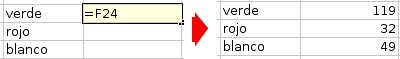
Puesto que con dos genes y dos alelos cada uno se pueden formar 24 = 16 clases genotípicas diferentes, calcularemos las proporciones de las tres clases fenotípicas en dieciseisavos para tener una visión mas precisa de la forma en que están distribuídas. Para ello deberemos dividir el número de individuos de cada clase fenotípica por el total y multiplicarlo por 16:
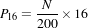
Para ello hacemos otra columna, y tecleamos la fórmula como se observa en la figura. En lugar de escribir directamente el número de individuos, anotamos la casilla donde éste se encuentra:
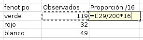
Al pulsar “Intro” deberá aparecer la proporción correspondiente. Seleccionamos la casilla donde acabamos de escribir picando sobre ella. Si está seleccionada presenta una línea doble alrededor, con un pequeño cuadrado en la esquina inferior derecha. Para copiar la fórmula actualizando automáticamente la casilla que hemos incluído en ella como la que contiene la frecuencia observada de la clase fenotípica, tendremos que picar sobre ese pequeño cuadrado de la esquina y estirar el marco doble hacia abajo, abarcando las tres casillas de las tres clases fenotípicas. la fórmula se copiará en todas ellas, actualizando la casilla de donde toma el total de cada clase:
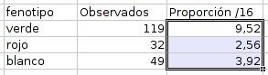
Como podemos ver se aproxima a las proporciones 9:3:4, que son las que se esperaría obtener en una F2, es decir en la descendecia de un cruce entre dihíbridos.
Es interesante que el alumno pueda razonar por su cuenta porqué se han obtenido estas proporciones en una población generada de forma aleatoria, y no mediante el cruce de dos dihíbridos.
Para comprobar si las desviaciones respecto a estas propociones son lo suficientemente grandes como para rechazar que nuestros resultados las cumplan, podemos realizar un análisis de χ2. Para esto, deberemos calcular cuantos individuos de cada clase fenotípica se esperaría obtener si el total de individuos se repartiese según las proporciones teóricas. Por lo tanto deberemos dividir los 200 individuos del total en
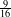
,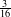
y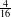
.Podemos crear una columna con las proporciones esperadas, y otra con los valores totales esperados, calculados según la fórmula que se observa en la figura, donde G29 corresponde con la proporción esperada (9):
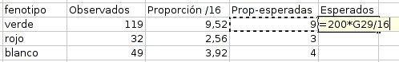
Tras pulsar “Intro” y copiar la fórmula hacia abajo tendremos la distribución esperada:
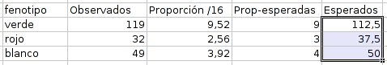
Ahora calcularemos los componentes de la χ2 según la fórmula:
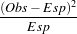
Incluiremos esta fórmula en la casilla correspondiente sustituyendo los valores Observados y Esperados por los números de las casillas correspondientes, de manera que se actualizen al copiar la fórmula hacia abajo:
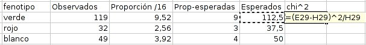
Una vez copiada, añadiremos una casilla más por debajo de las otras donde pondremos la fórmula con la suma de las tres casillas, como se puede ver en la siguiente figura [sum(i29:i31)], que sumaría el contenido de las casillas desde la I29 hasta la I31, y nos da el resultado mostrado de 1.20.
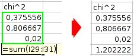
Deberemos comparar este valor con los de una tabla de χ2 para calcular la probabilidad de cometer un error de tipo II, es decir, de equivocarnos si rechazamos la hipótesis que hemos supuesto de que el total de individuos están distribuídos según las proporciones 9:3:4. Nuestro estudio tiene tres clases fenotípicas y, por lo tanto, dos grados de libertad, por lo que compararemos el valor de χ2 = 1.20 obtenido con los que se observan en la segunda fila de la siguiente distribución de χ2:
| g.l. | 0.95 | 0.90 | 0.80 | 0.70 | 0.50 | 0.30 | 0.20 | 0.10 | 0.05 | 0.01 | 0.001 |
| 1 | 0.004 | 0.02 | 0.06 | 0.15 | 0.46 | 1.07 | 1.64 | 2.71 | 3.84 | 6.64 | 10.83 |
| 2 | 0.10 | 0.21 | 0.45 | 0.71 | 1.39 | 2.41 | 3.22 | 4.60 | 5.99 | 9.21 | 13.82 |
Nuestro valor es: 0.71 < 1.20 < 1.39 que se corresponden con las columnas que indican una probabilidad 0.70 > P > 0.50. Al ser la probabilidad de equivocarse al rechazar la hipótesis muy superior al máximo permitido de 0.05, podemos concluir que las desviaciones observadas no permiten rechazar la hipótesis de que las clases fenotípicas se encuentran distribuídas según las proporciones 9:3:4 esperadas en el caso de una herencia con interacción epistática doble recesiva entre dos genes con dos alelos.
Por lo tanto, el diseño del carácter es correcto y se comporta como se esperabamos.